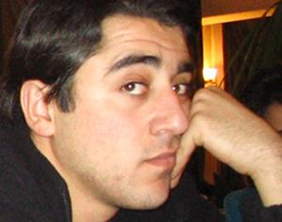

СПАСИБО ЗА ВСЕ-ТАКИ СОСТОЯВШУЮСЯ ВСТРЕЧУ
1-ого декабря РАУ посетили азербайджанский композитор-культуролог Эльмир Мирзоев и писатель-публицист Алекпер Алиев. В Ереван они приехали вместе с турецкой журналисткой Нурсун Эрель в рамках проекта "Южнокавказская интеграция: Альтернативный старт", осуществляемого Кавказским центром миротворческих инициатив. На протяжении всего визита они проводят мастер-классы для начинающих журналистов (в том числе из РАУ), участвуют в пресс-конференциях, дают интервью. Цель всего этого "наладить мосты взаимопонимания" между Арменией и Азербайджаном.
До визита в РАУ они уже имели опыт общения со студентами университета “Грачья Ачарян”, а в Ереванский государственный университет их попросту не пустили, отозвав студентов с мастер-классов. Среди мотиваций: “Нога турка не ступит в университет”.
Итак, РАУ. Зал не полон, так как встреча совпала с лекцией о Голодоморе посла Украины в Армении Александра Божко. Студенты рассаживаются, теребят мобильники. Мужская часть громко смеется и шутит в адрес «турок».
Тема встречи «Кризис культуры и современное искусство в постсоветском Азербайджане». Ее представлял композитор-культуролог Эльмир Мирзоев. Все доступно и очень знакомо: ситуация почти полностью повторяет армянские реалии. Композитор особо подчеркнул, что музыка, как и любое искусство, носит наднациональный характер и не может находиться в рамках мифов и предрассудков. И у Мирзоева есть большой опыт общения с коллегами из Армении: «С профессионалами не бывает проблем».
После показывают два фильма. Первый – череда фотографий города Баку: беспорядочная застройка столицы, бок о бок полуразрушенные трущобы и современные “элитные” дома. Некоторые из преподавателей знали город и по ходу обсуждали районы, улицы, и новые названия.
Второй фильм - “Черный рай”. Двое детей гуляют, играют на свалке рядом с нефтяными вышками. Кадры чередуются сценами со свадьбы, дорогими машинами, нищими на улицах, манекенщицами в нижнем белье, жестоким разгоном демонстрантов. Это сопровождается музыкой и текстом: “Нефть приносит свободу и равенство”, “Нефть – это мир и благополучие”. Если б не бурильные установки и азербайджанская речь, фильм как будто про Армению.
Титры, аплодисменты, приветственные слова зрителей. Директор Научно-исследовательского Центра по Кавказоведению и проблемам Ближнего Востока, д.и.н., профессор Розалия Габриелян поблагодарила за “честный” фильм, непредвзятое отношение автора, показавшего блеск и нищету современного Азербайджана. Заведующая кафедрой арменоведения Джема Барнасян пожаловалась на отсутствие комментария во время фильма и предположила, что автор фильма обвиняет во всех показанных бедах армян.
Трудно сказать, в какой момент зал понесло в сторону выпадов против гостей, но тон вопросов и общая атмосфера в зале изменилась. Студенты стали, изощряясь в “патриотизме”, активно жестикулировать в адрес гостей, стыдить их и доказывать, что последние являются представителями нации глубоко отсталой. Зал в свою очередь рукоплескал после каждого подобного выступления.
Казалось, что задававших вопросы студентов и преподавателей ответы вообще не интересовали. Они пришли с уже готовым образом азербайджанца-врага в голове. Попытки гостей рассказать о значительной части азербайджанского общества, которая выступает за разрушение образа кровного врага и крайне негативно относящихся, например, к стараниям оправдать убийцу армянского офицера, были тщетными.
Гости замолчали совсем.
Микрофон продолжал беспорядочно блуждать, и вопросы-обвинения чередовали друг друга. “Нация рамилев сафаровых”, “надо будет - до Баку дойдем”, “нация убийц”, “турок – всегда останется турком”, - гремели динамики.
Ведущего явно не хватало, а взявший на себя роль модератора декан факультета журналистики продолжал вторить большинству: “турок – это во всем мире оскорбление”. При этом девушку, попытавшуюся объяснить, что среди гостей нет ни азербайджанского президента, ни министров, декан обвинил в наивности и продолжил излагать свои взгляды на европейскую и региональную политику. Он вопрошал, почему нация, “за два дня истребившая 2 миллиона армян”, обижается на высказывания Римского Папы.
Изменить происходящее взялся, было, куратор проекта Георгий Ванян, но, удостоившись со стороны студента эпитета “продажный армянин”, перешел на благодарности руководству университета за “все-таки состоявшуюся встречу” и стал прощаться.
Юрий Манвелян
07-12-06
Газета РАУ
До визита в РАУ они уже имели опыт общения со студентами университета “Грачья Ачарян”, а в Ереванский государственный университет их попросту не пустили, отозвав студентов с мастер-классов. Среди мотиваций: “Нога турка не ступит в университет”.
Итак, РАУ. Зал не полон, так как встреча совпала с лекцией о Голодоморе посла Украины в Армении Александра Божко. Студенты рассаживаются, теребят мобильники. Мужская часть громко смеется и шутит в адрес «турок».
Тема встречи «Кризис культуры и современное искусство в постсоветском Азербайджане». Ее представлял композитор-культуролог Эльмир Мирзоев. Все доступно и очень знакомо: ситуация почти полностью повторяет армянские реалии. Композитор особо подчеркнул, что музыка, как и любое искусство, носит наднациональный характер и не может находиться в рамках мифов и предрассудков. И у Мирзоева есть большой опыт общения с коллегами из Армении: «С профессионалами не бывает проблем».
После показывают два фильма. Первый – череда фотографий города Баку: беспорядочная застройка столицы, бок о бок полуразрушенные трущобы и современные “элитные” дома. Некоторые из преподавателей знали город и по ходу обсуждали районы, улицы, и новые названия.
Второй фильм - “Черный рай”. Двое детей гуляют, играют на свалке рядом с нефтяными вышками. Кадры чередуются сценами со свадьбы, дорогими машинами, нищими на улицах, манекенщицами в нижнем белье, жестоким разгоном демонстрантов. Это сопровождается музыкой и текстом: “Нефть приносит свободу и равенство”, “Нефть – это мир и благополучие”. Если б не бурильные установки и азербайджанская речь, фильм как будто про Армению.
Титры, аплодисменты, приветственные слова зрителей. Директор Научно-исследовательского Центра по Кавказоведению и проблемам Ближнего Востока, д.и.н., профессор Розалия Габриелян поблагодарила за “честный” фильм, непредвзятое отношение автора, показавшего блеск и нищету современного Азербайджана. Заведующая кафедрой арменоведения Джема Барнасян пожаловалась на отсутствие комментария во время фильма и предположила, что автор фильма обвиняет во всех показанных бедах армян.
Трудно сказать, в какой момент зал понесло в сторону выпадов против гостей, но тон вопросов и общая атмосфера в зале изменилась. Студенты стали, изощряясь в “патриотизме”, активно жестикулировать в адрес гостей, стыдить их и доказывать, что последние являются представителями нации глубоко отсталой. Зал в свою очередь рукоплескал после каждого подобного выступления.
Казалось, что задававших вопросы студентов и преподавателей ответы вообще не интересовали. Они пришли с уже готовым образом азербайджанца-врага в голове. Попытки гостей рассказать о значительной части азербайджанского общества, которая выступает за разрушение образа кровного врага и крайне негативно относящихся, например, к стараниям оправдать убийцу армянского офицера, были тщетными.
Гости замолчали совсем.
Микрофон продолжал беспорядочно блуждать, и вопросы-обвинения чередовали друг друга. “Нация рамилев сафаровых”, “надо будет - до Баку дойдем”, “нация убийц”, “турок – всегда останется турком”, - гремели динамики.
Ведущего явно не хватало, а взявший на себя роль модератора декан факультета журналистики продолжал вторить большинству: “турок – это во всем мире оскорбление”. При этом девушку, попытавшуюся объяснить, что среди гостей нет ни азербайджанского президента, ни министров, декан обвинил в наивности и продолжил излагать свои взгляды на европейскую и региональную политику. Он вопрошал, почему нация, “за два дня истребившая 2 миллиона армян”, обижается на высказывания Римского Папы.
Изменить происходящее взялся, было, куратор проекта Георгий Ванян, но, удостоившись со стороны студента эпитета “продажный армянин”, перешел на благодарности руководству университета за “все-таки состоявшуюся встречу” и стал прощаться.
Юрий Манвелян
07-12-06
Газета РАУ
Кавказский Центр Миротворческих Инициатив
© Ассоциация Текали - info@southcaucasus.com